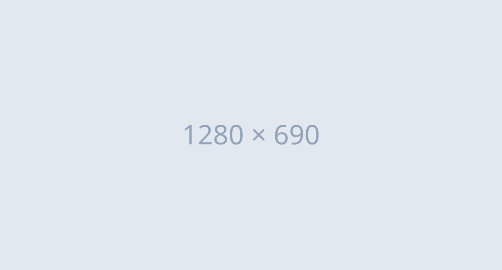
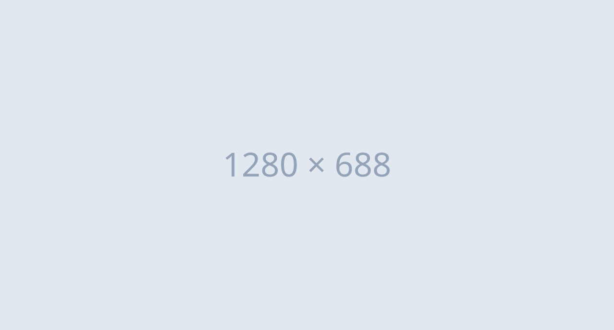

Case Study · 2027
Vesper Audio: a speaker launch you can pour.
A liquid 3D speaker that reshapes to the music, a colour configurator and pre-orders, in one scroll.
- Client
- Vesper Audio, Copenhagen
- Role
- WebGL and front-end lead, with Field & Form on design
- Timeline
- 9 weeks, January to March 2027
- Stack
- Three.js, GLSL, Astro, Shopify Storefront API
- Live
- vesper.draftmango.dev
The Brief
Make a speaker feel like sound before anyone hears it.
Vesper’s first speaker had no buttons and no grille, just a soft, liquid shape. Product photos made it look like a pebble. The launch had to show what it does: move with the music.
We had nine weeks, a pre-order date that could not move, and one rule from their CEO: it has to work on the phone in your pocket, not just on a studio monitor.


The Approach
Four decisions that made it fast.
- 01One mesh, moved on the GPUThe speaker is a 6,000-triangle sphere. The music bends it in the vertex shader, so the CPU never touches a vertex.
- 02Three quality tiersThe first two seconds measure the frame rate and pick a tier: full, light or a still render. Nobody sees a stutter.
- 03The page before the sceneAstro ships the copy and the buy button as plain HTML. The 3D loads after, so the page paints in 1.1 s.
- 04Calm by requestWith reduced motion on, the shape breathes slowly instead of dancing, and the configurator still works.
uniform float uTime;
uniform sampler2D uSpectrum; // 64 bands, written every frame
uniform float uCalm; // 1.0 under prefers-reduced-motion
varying vec3 vNormal;
void main() {
// which band this vertex listens to: latitude on the sphere
float band = acos(normal.y) / 3.14159;
float level = texture2D(uSpectrum, vec2(band, 0.5)).r;
float breath = 0.04 * sin(uTime * 0.8);
float push = mix(level * 0.35, breath, uCalm);
vNormal = normalize(normalMatrix * normal);
vec3 moved = position + normal * push;
gl_Position = projectionMatrix * modelViewMatrix * vec4(moved, 1.0);
}The Results
Measured on a mid-range phone, on 4G.
96
Performance
100
Accessibility
100
Best Practices
100
SEO
+41%Pre-orders against forecast
1.1 sLargest paint on 4G
60 fpsOn a three-year-old phone
4 minAverage time on the page

“By the end of week one our board had stopped asking whether WebGL was a risk and started asking when we could launch.”
 Ines VandermeerHead of Digital, Vesper Audio
Ines VandermeerHead of Digital, Vesper Audio
Got a launch in 2027?
I take on four projects a year, one at a time. Tell me about yours and you will hear back within two working days.
Availability
- June 1 slot
- July 1 slot
- August Booked
- September Open